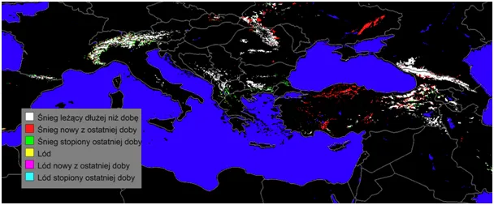
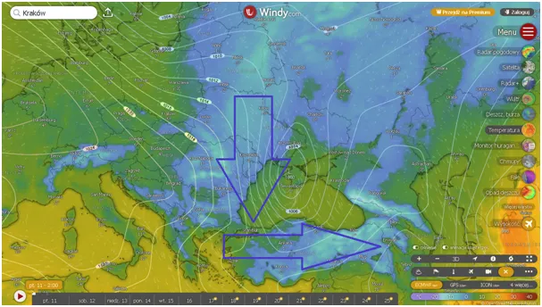
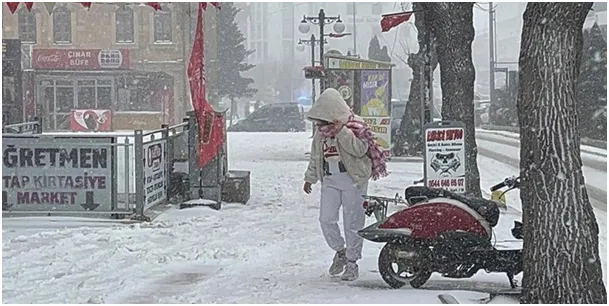

Palmy z ziemi zbieramy
Gdy na południu Kazachstanu od rana temperatura zbliża się do 30 st. C, położona na tej samej szerokości geograficznej Turcja zasypywana jest w połowie kwietnia śniegiem. I nie są to symboliczne opady, w wielu regionach dziś zamknięte są szkoły, bo dojazd w górskich rejonach jest niemożliwy. Turcja to kraj górzysty i śnieg jest tam rzeczą powszechną, ale nie w kwietniu.

Chłód, jaki przez kilka poprzednich dni odczuwaliśmy w Polsce, zsunął się daleko na południe i dotarł do południowego Egiptu i do Sudanu, czyli za zwrotnik. Milczą o tym media, szykujące już czerwone mapki na sezon letni. Od kilku tygodni mamy urodzaj wyżów na północ od naszego zwrotnika, sprzyja im suche powietrze, będące następstwem zimnego Atlantyku na zachód od Afryki.

Impet niżów atlantyckich z tego powodu jest mały i opady docierają do Europy Wschodniej w formie szczątkowej jak dziś. Widzimy intensywne opady śniegu w Rosji, ale jest to wilgoć niesiona z północnego Atlantyku.
Marzec był w Polsce cieplejszy o 3 st. C niż w latach ubiegłych to dużo, dlatego możemy się spodziewać korekty w kwietniu. Na szczęście na weekend dmuchnie z południa i poczujemy prawdziwą wiosnę, przyjemnie będzie nieść kolorową "palmę" zrobioną z wierzbowych gałązek.

W Ewangelii czytamy, że pod nogi osła niosącego Jezusa, wkraczającego triumfalnie do Jerozolimy, rzucano palmowe liście. Każdy, kto dotykał palmę, wie, że nie sposób wspiąć się po taki liść, drzewo się broni swymi kolcami. Święto Paschy przypadało po pierwszej wiosennej pełni Księżyca, była to niezawodna metoda, aby rozproszony, pasterski lud mógł odebrać ten komunikat dosłownie prosto z nieba, aby ruszyć z dalekiej pustyni do Jerozolimy.
Na ten okres, co widzimy za oknem, przypadają wiosenne wichury i sztormy, zrywające słabe, starsze liście palmowe. Sprzątanie i palenie tych liści jest widocznym znakiem końca zimy. W naszych szerokościach geograficznych jeszcze za miesiąc "zimna Zośka" ściągnie północny wir, ale teraz (od soboty) cieszmy się pełnią wiosny.
Paweł Klimczewski